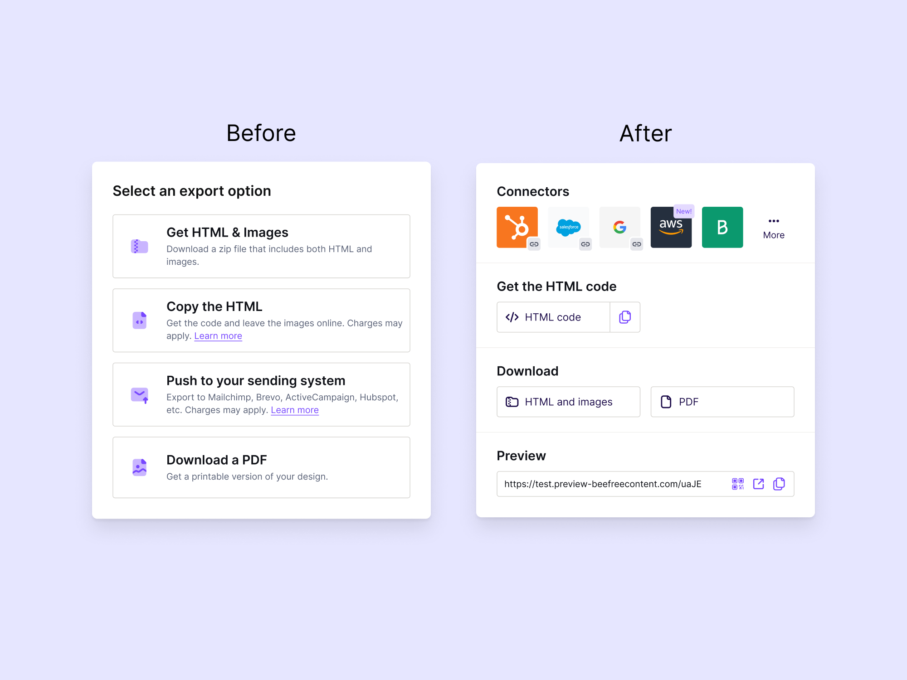

RGE Studio export revamp
- My role
- Product Designer: research, testing, UX/UI, prototyping
- Duration
- 6 weeks, shipped May 2025
- Team
- Product Manager, frontend and backend engineers, QA, marketing
- Process
- Shape Up: pitch, betting table, fixed-time build behind a feature flag
- Research
- Surveys, usage data, card sorting, 2 usability tests (30 participants), 5‑second tests
- Tools
- Figma, Ballpark, ProdPad, Pendo

Context
Marketers, designers and CRM teams build emails in the editor, then send them from their own platform. There were four ways to get a design out: copy the HTML, download the HTML with its images, download a PDF, or push it to a sending platform through a native connector. Connectors are the fastest, one click, and they can even update an email you already exported. Yet very few people used them.
On the entry plan, export is also where the monthly limit shows up, so the screen matters for upgrades. Keeping upgrade conversion at least where it was became a hard requirement for release.
The problem
- People didn’t know what they could do. Even in our highest-paying segment, about half of users copied the HTML by hand and fewer than 1 in 10 used a connector. Users kept requesting connectors we already had.
- The flow made you commit before you could look around. You picked a method on the first screen and only saw what it did on the next. A wrong pick meant starting over, and interviews showed people stick with the first method that works.
- It explained itself too much. Instructional copy and an onboarding walkthrough most people closed right away. If a screen needs that much explaining, the screen is the problem.
- It couldn’t grow. Requests for new formats, like PNG export and HTML minification, had nowhere to go without making the modal harder to use.
- No minifier. Gmail clips emails over 102 KB, so content-heavy senders were pasting our code into online minifiers and back again. Competing builders already offered it, and customers had been asking since 2021.
Research and testing
The project ran as a Shape Up pitch, with product, design, engineering and marketing working as one team. I owned the research and design and ran three rounds of testing, each feeding the next.
- Which structure works? Card sorting plus unmoderated tasks with 15 external participants, comparing the old flow, a one-level popover and a popover with a sidebar. The categories held up, and the one-level version had the least friction: the HTML download task took about 70% less time, with more people completing it.
- Does it work for our users? A high-fidelity prototype tested with 15 real users. Most preferred it, one-click HTML copy was the favourite detail, and the split between “HTML” and “HTML + images” was finally clear. Hiding PNG export behind “See all” showed me what not to bury.
- Does the upgrade path still work? Two 5-second tests on the redesigned plan-limit banner. Everyone noticed when the limit was reached, and everyone who said it could be removed knew it was by upgrading.
Key design decisions
- Everything on one level. Every method is visible as soon as the modal opens, so you can look around before you commit.
- Integrations first, ordered for the person looking. Connected integrations, then new connectors, then the platform picked at onboarding, then the most popular ones. A more visible “request a connector” link tells people their tool might come next.
- One click to copy, details on demand. The copy icon grabs the HTML straight away; opening “HTML code” shows the code, its file size, the minify toggle and download.
- Minification built in, not bolted on. A simple on/off toggle that remembers your choice, with file size always shown and turning yellow before Gmail would clip. Kept out of connectors, since minified code is hard to edit after export.
- Plans create the need instead of hiding it. File size is visible on every plan and the minifier sits on higher tiers, turning a common pain point into a new reason to upgrade.
- What we cut. PNG export (it now has a clear home for later), tooltips and walkthroughs (if the flow needs a guide, it isn’t done), and an opt-in rollout.
The solution
The new modal has five sections: Integrations with a personalized order and “New” labels; HTML with one-click copy or a detail view with size and minify; Download for HTML + images as a ZIP; PDF in desktop or mobile versions; and a Preview link with QR code, previously tucked away in a panel few people opened. The minifier cuts file size by about 20% on average without changing how the email renders. It was built in a 6-week cycle and shipped to every plan on schedule.
Impact
- More people found the connectors. Almost 40% more customers exported through an integration, and every connector grew, the smaller ones most.
- The growth held. Numbers stayed up for the four months after launch instead of spiking and dropping back: a change in habits, not a one-off try.
- People picked the format they needed. ZIP exports dropped while HTML exports rose, a sign the two options were finally clearly different.
- Upgrade path intact, plus a new one. The plan-limit banner kept working, and the minifier added a fresh reason to upgrade.
These are simple before/after averages over four months on each side, not adjusted for seasonality.
Reflections
- Habits form at the first export. If an option isn’t visible the first time, many people will never see it.
- Test the structure before the details. Settling the structure in the first round let the next one focus on labels, components and edge cases.
- Business constraints can be design input. “Don’t hurt upgrade conversion” turned into a real part of the design once I tested it on its own.
- Feature requests are often discoverability problems. Users asked for connectors we had and loved a preview link that already existed.
Next steps
PNG export in its new spot in the download section, pinned or default export options, bulk export, desktop and mobile PDF in one file, and suggesting minification when an email check finds it too large.